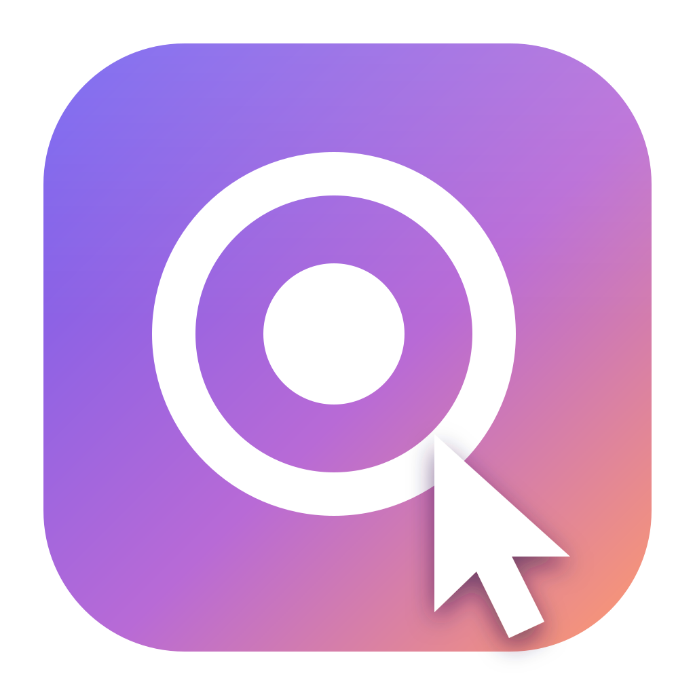

🎬
Mini recorder
A compact floating bar opens at startup. Choose a screen from live thumbnails, check the camera and microphone, press Record.

Recorder StudioRecord your screen, camera and voice, then edit with a smooth cursor, automatic zooms, camera layouts and a 9:16 Reels format. Fast GPU export. No account, nothing uploaded.
Everything in one place
A compact floating bar opens at startup. Choose a screen from live thumbnails, check the camera and microphone, press Record.
Get ready before capture starts. Set it to 0, 3 or 5 seconds; the countdown itself never appears in your video.
The system cursor is replaced by a smooth vector cursor with click ripples, highlight and idle hiding.
Clicks become smooth zoom-and-pan segments you can edit on the timeline, or add your own.
NVENC, Quick Sync or AMF while recording; WebCodecs GPU encoding on export. CPU fallback everywhere.
Split, trim, ripple delete, reorder and undo on a thumbnail timeline. Per-clip looks and auto-saved projects.
Show shortcuts and typing as tidy bubbles, perfect for tutorials.
No servers, no analytics. Even camera background removal runs on your device.
Camera layouts
Screen and camera are recorded as separate tracks, so the layout is an editing choice, not a recording decision.
Reels · Shorts · TikTok
Switch the project to 9:16 and the frame follows your cursor, so text stays large instead of shrinking the whole desktop. Split screen stacks your camera underneath and follows the cursor too. Click zooms pause in Reels and come back when you return to 16:9.
How it works
Pick a screen or window, turn on camera, microphone or system audio, and press Record.
The recording opens in the editor. Cut, choose a layout, style the background and frame.
MP4 up to 4K 60 fps or GIF — to a file or straight to your clipboard.
Keyboard shortcuts
FAQ
Yes. Recorder Studio is open source under the MIT license — no watermark, no subscription, no time limit.
The installer is not code-signed yet. Click “More info”, then “Run anyway”. The source code is public on GitHub.
No. Any GPU with hardware H.264 (most Intel, NVIDIA and AMD from the last decade) makes stopping and exporting much faster; otherwise the CPU is used automatically.
Never. Recordings, projects and exports stay in Videos\Recorder Studio on your computer.
Yes. Screen and camera are separate tracks, so you can switch between overlay, split, full camera, cutout or screen only in the editor.
Free for Windows 10 and 11.